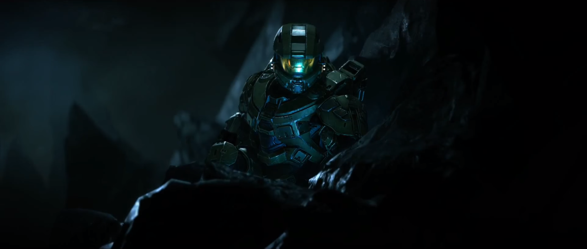
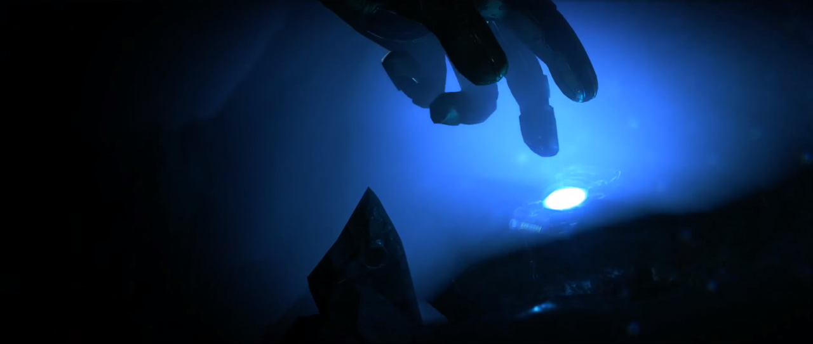
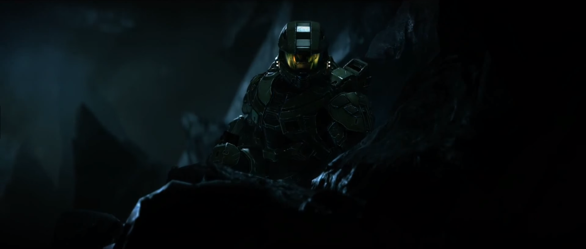
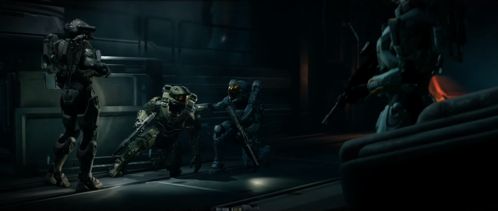

It was now that the Domain opened to me, without benefit of ancilla, interface, or past experience. It was new, deep, appropriately shapeless—that made sense. I was dying, after all…
Before the bump, and the sudden inrush of cold, clean air—breathable air, but with a sharp tang of soot and ozone—the Domain lifted up and away. I was grateful to be free of it.
For a moment, I doubted I had seen anything but a reflection of my own emotions and predicament.
“Sometimes, there is a kind of broken-mirror aspect.” [Halo: Cryptum]